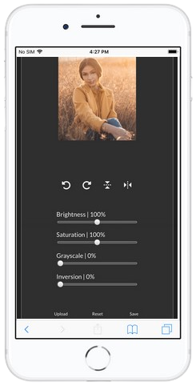

Project Overview
This image editor app is a web-based tool that allows users to easily upload an image and apply a range of editing settings to transform it in just a few clicks. With options to adjust brightness, saturation, grayscale, and inversion, as well as flip and rotate functions, this app is a versatile solution for anyone looking to enhance their images.
Technical Details
The app is built using modern web development technologies such as HTML, CSS, and JavaScript, ensuring fast and reliable performance. The interface is intuitive and user-friendly, making it easy for even those with little technical experience to use. The design is responsive making the website accesible in all screen sizes.
Features
Upload an image from your computer
Adjust brightness, saturation, grayscale, and inversion settings
Flip and rotate images in multiple directions
Download the edited image to your computer
Reset to the original settings
Potential Uses
This image editor is an ideal solution for anyone looking to enhance their photographs, whether it's for personal or professional use. The app can be used by photographers, designers, bloggers, or anyone who wants to make their images stand out from the crowd.

Future Development
Future iterations of the app could include additional features such as the ability to add filters or text to images, as well as options for cropping and resizing.
Conclusion
In summary, this web-based image editor app is an easy-to-use tool for enhancing your photographs. With its range of editing settings, intuitive interface, and fast performance, it's a versatile solution that can be used by anyone looking to create stunning images.